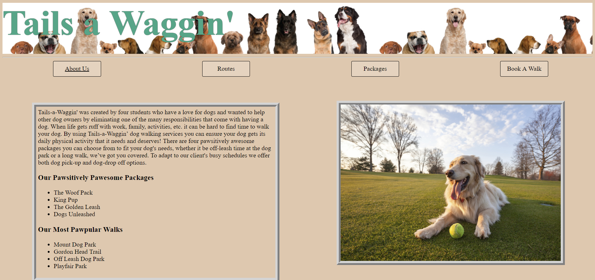
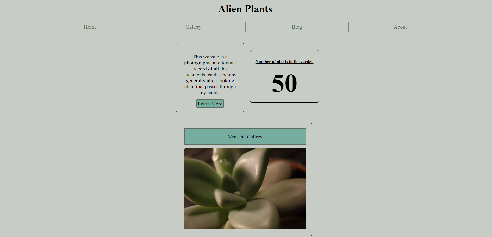

This website was designed and created for Digital Humanities 150 class as a final project. It contains scans and images of antiques that I have collected over my life. The gallery includes books, photographs, and pins that alread have or will soon be 100 years old. The purpose of this project was to utilize web design to develop a website to showcase images or items that have significance to you, and to correctly impliment appropriate metadata practices to describe the objects being showcased.

This website was designed and created in CSC 101 class with 4 other individuals. The goal of the class was to create a hypothetical buisness, design a front end website for that buisness, then create a back end using IBM Bluemix and finally connect the two. The backend we attempted to create involved logging all walks booked on a database then print them onto a webpage acessable by the dog walkers. The walk log page can be acessed by clicking the phone number at the footer on the Book A Walk page.

This website serves as a log and a resource for the care of the succulents and cacti under the care of Liam and Teya. It contains a detailed description of each known plant, a gallery of all plants in the collection, links to additional rescources for each plant, a calendar for the watering schedule, macro level photographs of each plant, a log of plant care as well as a list of current germinating seeds.
This web-page serves as an easily shareable and complete resume for Liam English-Birge. It was styled using the Bootstrap CSS library. It contains education history, known languages, work experience with descriptions of positions, volunteer work, skills, interests, activities, etc.